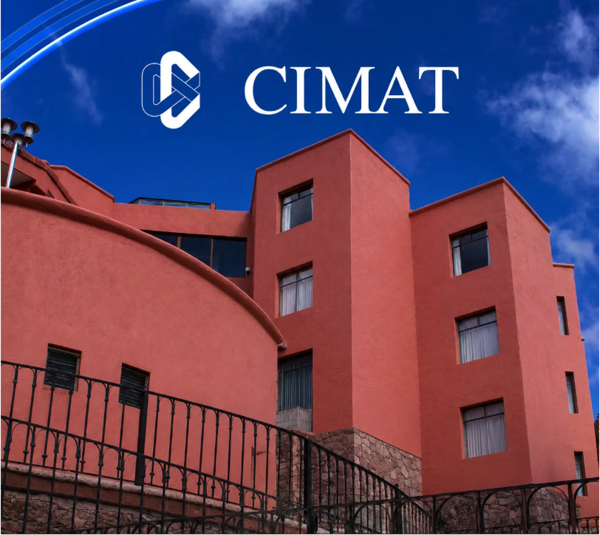
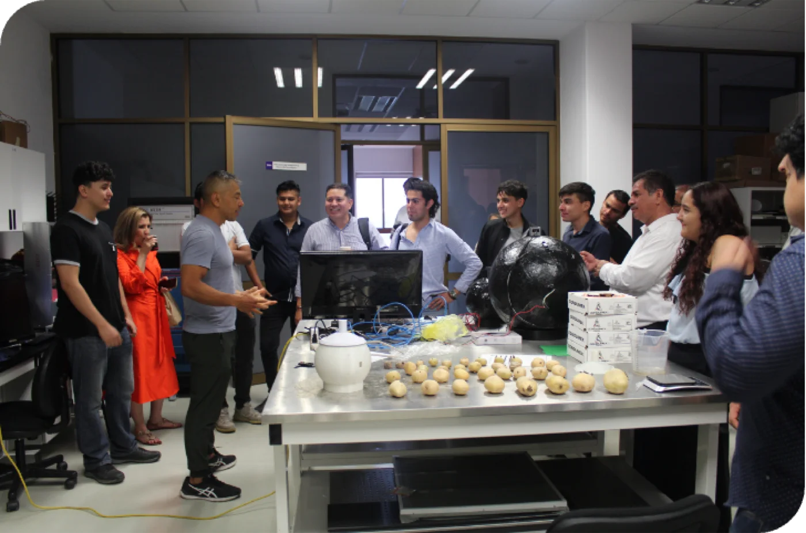
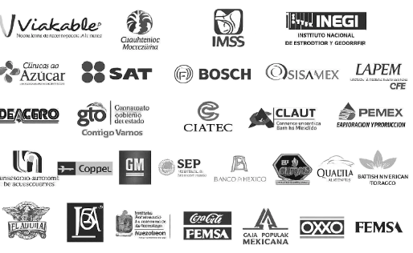
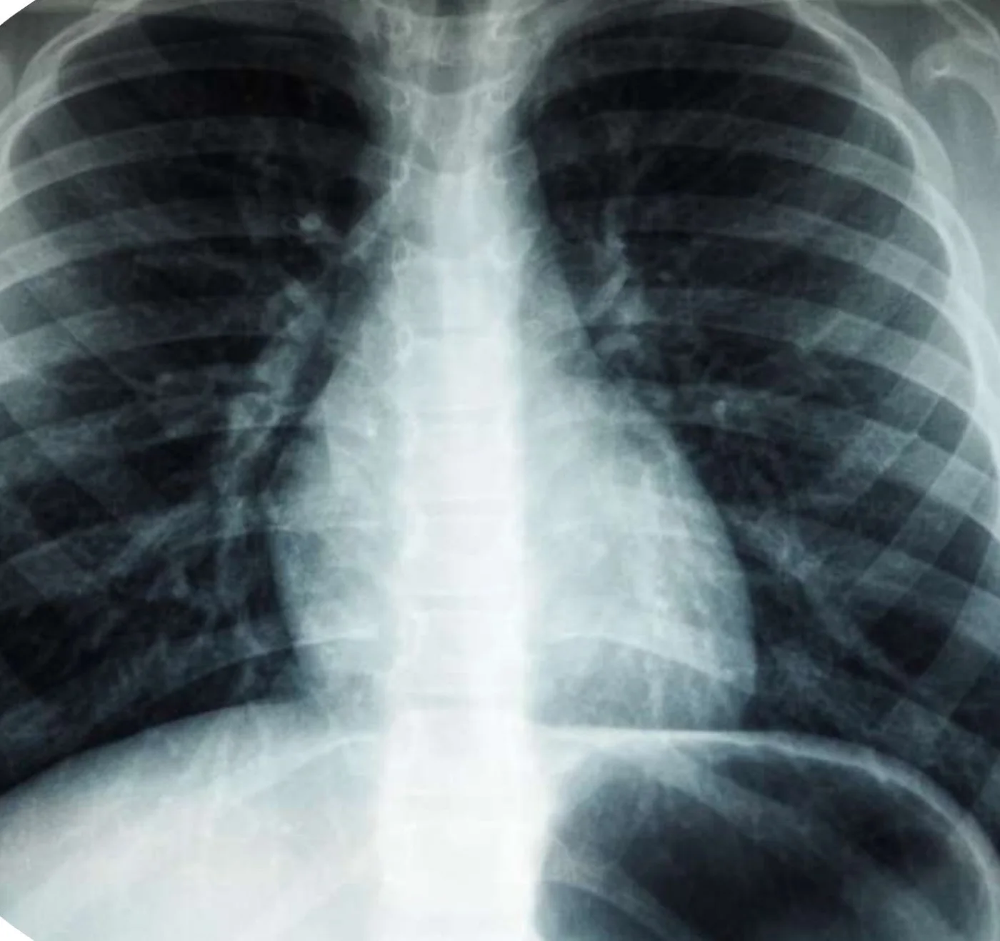
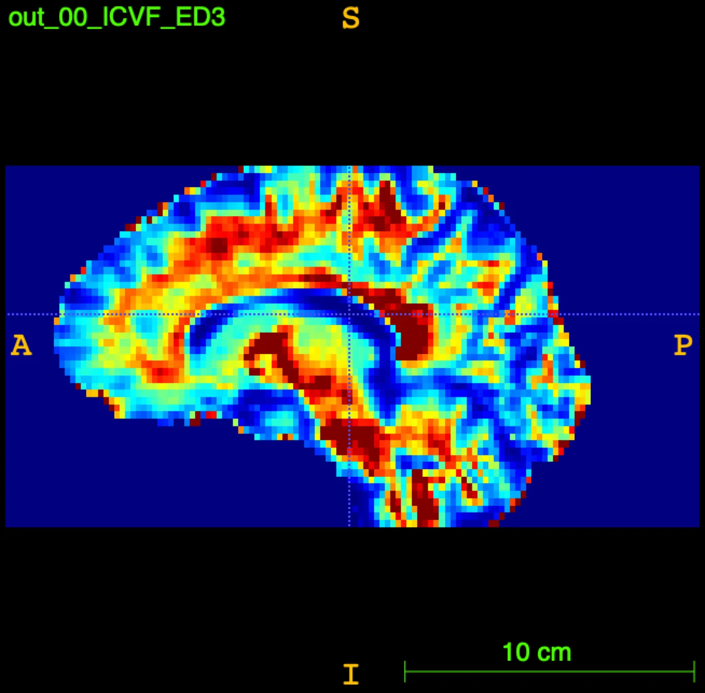
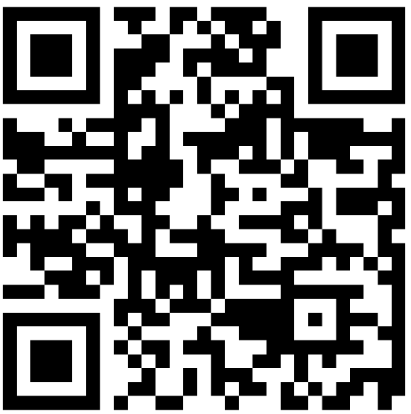
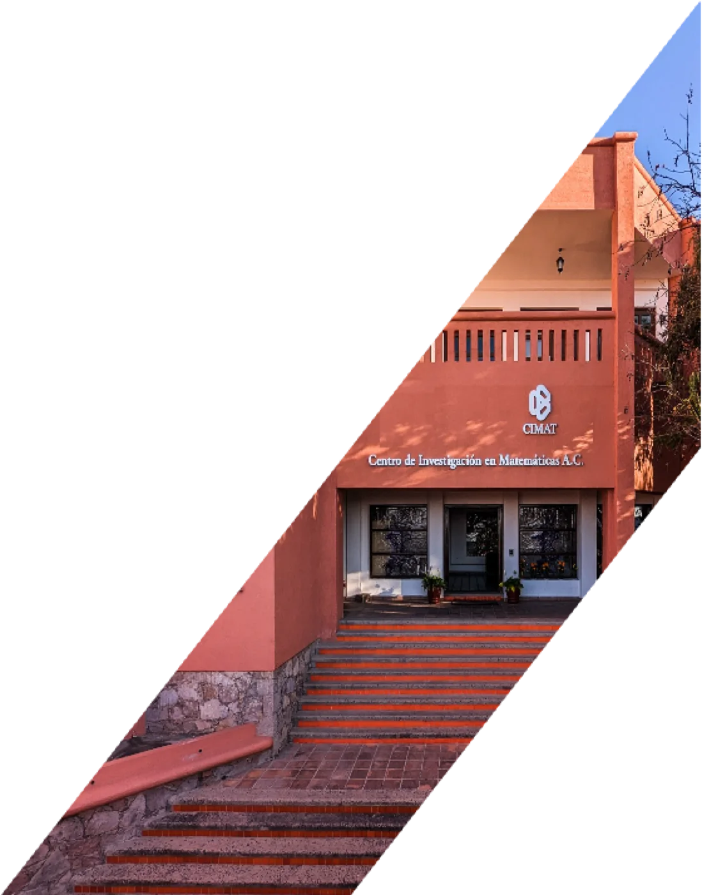
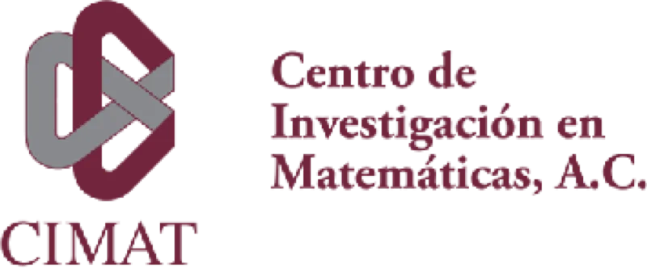

Presentación institucional · Octubre 2026
Centro de Investigación en MatemáticasA.C.
Un Centro Público de Investigación dedicado a la generación y transferencia del conocimiento matemático, científico y tecnológico para el desarrollo de México, enfocado en investigación aplicada, formación de talento y soluciones innovadoras para los sectores académico, científico y productivo.
Nosotros
¿Qué es el CIMAT?
El Centro de Investigación en Matemáticas A.C. es un Centro Público de Investigación de la Secihti, dedicado a la investigación, la formación de recursos humanos de alto nivel, la vinculación con los sectores productivos y la divulgación del conocimiento matemático y científico. Su misión es contribuir al desarrollo científico y tecnológico de México mediante la transferencia e implementación de soluciones innovadoras.

Investigación
Generación de conocimiento científico y técnico en las líneas de investigación del Centro.
Formación de recursos humanos
Programas de maestría y doctorado orientados a la investigación. Con reconocimiento internacional.
Vinculación
Desarrollo e implementación de soluciones, consultoría y capacitación especializada.
Divulgación
Actividades dirigidas a niñas, jóvenes y público en general para la difusión de la Ciencia.
Infraestructura
Capital Humano e Infraestructura
El CIMAT cuenta con un equipo de excelencia y una infraestructura tecnológica de vanguardia distribuida en 5 sedes a lo largo de la República Mexicana, lo que le permite generar y transferir conocimiento de forma eficiente y con impacto nacional.
Investigación
Áreas y Líneas de Investigación
El CIMAT genera conocimiento científico de frontera a través de la investigación en sus cuatro grandes áreas de especialidad, buscando contribuir al desarrollo científico y tecnológico de México mediante la colaboración multidisciplinaria y la transferencia del conocimiento.
Matemáticas Básicas
- Algebraica y Análisis
- Ecuaciones Diferenciales Parciales
- Geometría Diferencial
- Sistemas Dinámicos y Topología
Ciencias de la Computación
- Aprendizaje Máquina y PLN
- Ingeniería del Software
- Cómputo Paralelo y Optimización
- Procesamiento de Señales
- Imágenes y Visión Computacional
- Robótica y Sistemas Inteligentes
Probabilidad y Estadística
- Estadística Aplicada e Inferencia
- Modelación Estocástica
- Teoría de la Probabilidad
Matemáticas Aplicadas
- Análisis Numérico
- Cómputo Científico
- Biomatemáticas y Análisis Aplicado
- Problemas Inversos
- Cuantificación de Incertidumbre
- Economía Matemática
Formación de alto nivel
Formación de Recursos Humanos
El CIMAT ofrece programas de maestría y doctorado orientados a la investigación, acreditados ante el Sistema Nacional de Posgrados (SNP) de la Secretaría de Ciencia, Humanidades, Tecnología e Innovación (Secihti) a nivel de competencia internacional. Estos programas forman investigadores y especialistas capaces de generar conocimiento y transferir tecnología para el desarrollo del país.
Orientación en Ciencias de la Computación
Orientación en Matemáticas Aplicadas
Orientación en Matemáticas Básicas
Ingeniería de Software
Orientación en Probabilidad y Estadística
Orientación en Robótica
Modelación y Optimización de Procesos
Cómputo Estadístico
Vinculación
Vinculación: Soluciones para los Sectores Productivos y de Servicios
El CIMAT ofrece servicios tecnológicos especializados que acompañan a organizaciones públicas y privadas desde la identificación del problema hasta la implementación y seguimiento de la solución, integrando equipos altamente calificados y herramientas de vanguardia.
Ciencia de Datos
- Explotación y analítica de datos predictivos y prescriptivos
- Procesamiento y depuración de datos
- Consultoría en estrategias de analítica
- Despliegue y visualización de datos
Cómputo Científico
- Inteligencia artificial y modelación computacional
- Visión computacional
- Programación en paralelo y supercómputo
Matemáticas y Estadística
- Modelación estadística y pronósticos
- Logística de suministros y optimización de procesos
- Construcción y diseño de indicadores
- Modelos georeferenciados y simulación

Impacto
Clientes Atendidos
El CIMAT ayuda a sus clientes a generar valor real a través de soluciones integrales que van desde la caracterización precisa del problema hasta la implementación y seguimiento continuo de la solución.
Entre nuestros clientes se encuentran instituciones del sector financiero, industrial, gubernamental, de salud, energético y de telecomunicaciones, consolidando al CIMAT como un referente nacional en la aplicación del conocimiento matemático a problemáticas reales.

Propuesta para Consorcio Médico Mius
Capacidades del CIMAT para la cadena de suministro médico
Ciencia de datos, optimización y visión computacional con resultados probados en proyectos con la industria y el sector salud
Coordinación de Servicios Tecnológicos | Octubre 2026
Resumen ejecutivo
El CIMAT puede generar valor en cada eslabón de la cadena de distribución de Mius
Fuente: proyectos de vinculación del CIMAT; oportunidades identificadas a partir del perfil público de Consorcio Médico Mius.
Caso 1 · Control de inventarios y logística
En una comercializadora con cerca de 10,000 artículos, el CIMAT elevó las entregas de 65% a 90%
Problema
Tener un mejor control del inventario de la empresa. El principal desafío: un catálogo extenso de cerca de 10,000 artículos.
Solución
- Análisis de inventarios
- Análisis de conglomerados para segmentar el catálogo
Aplicación en MiusSegmentar el catálogo de medicamentos, material de curación y equipo para definir niveles de inventario por almacén.
Fuente: proyecto CIMAT de inventario en ventas de tubos y mangueras industriales.
Caso 2 · Inteligencia de negocios
La analítica de transacciones a gran escala anticipa la demanda y protege la cartera de clientes
Modelos estadísticos junto con la estrategia del negocio para incrementar el valor, la rentabilidad y la permanencia de los clientes.
Abasto
- Pronóstico de la demanda
- Anticipar la compra de producto
- Precios futuros de commodities
Clientes
- Lealtad y retención de clientes
- Clasificación de clientes o proveedores
- Evaluación de nuevos puntos de venta
Distribución
- Determinar el esquema de distribución
- Logística nacional e internacional
- Optimización de portafolio
Cruzar el historial de pedidos de cadenas, farmacias, distribuidores, hospitales y sector salud para pronosticar la demanda por cliente y producto, y detectar a tiempo a los clientes en riesgo.
Fuente: proyectos CIMAT de inteligencia de negocios y análisis de transacciones (Big Data).
Caso 2 · Análisis transaccional
Cada transacción guarda 11 dimensiones que, analizadas a escala, revelan la demanda y la lealtad de los clientes
Preguntas de negocio que resuelve
- Pronóstico de la demanda
- Análisis de lealtad y retención de clientes
- Evaluación de nuevos puntos de venta
- Determinar el esquema de distribución
- Trazabilidad en la producción
- Análisis de transacciones: millones de registros diarios
- Optimización de portafolio
- Precios futuros de commodities
- Anticipar la compra de materia prima
- Clasificación de clientes o proveedores
- Logística nacional e internacional
Datos que se extraen de cada ticket de venta · pasa el cursor sobre un dato
Cada pedido y factura (cliente, clave, cantidad, fecha, canal, condiciones de pago) alimenta el mismo análisis para anticipar la demanda y cuidar la cartera.
Fuente: proyecto CIMAT de análisis de transacciones (millones de registros diarios). Ticket ilustrativo.
Caso 3 · Calidad y visión computacional
Estadística y visión computacional aseguran la calidad y exactitud de lo que se recibe y se entrega
Muestreo de aceptación
DASA · Aguascalientes- Planes de muestreo y toma de muestras para verificar tamaño, calidad y grado de contaminación
- Diseño estadístico de muestreo de aceptación para el control de la materia prima
Conteo automático
INOVACOR- Máquina contadora de cartón por visión computacional para entregar el número correcto de cajas o láminas
- De prueba de concepto a versión beta y primera versión comercial
Validación de autenticidad
Banco de México- Clasificadores automáticos de billetes en circulación por grupos de falsificación
- Métrica continua para medir la calidad de falsificación de elementos de seguridad
Muestreo de aceptación en la recepción de insumos, en apoyo a su sistema ISO 9001:2015, y verificación automática de cantidades en el surtido de pedidos.
Fuente: proyectos CIMAT con DASA (Aguascalientes), INOVACOR y Banco de México.
Capacidad propuesta · Inteligencia de licitaciones
Un sistema automatizado detectaría y prepararía las licitaciones abiertas del sector salud antes que la competencia
Web scraping diario de Compras MX y de los portales de IMSS, ISSSTE, IMSS-Bienestar, Birmex, Secretaría de Salud, Hospitales Regionales de Alta Especialidad e Institutos Nacionales, más el DOF
Lenguaje natural para clasificar convocatorias (medicamento, material de curación, equipo) y cruzar las claves solicitadas con el catálogo de Mius
Aviso inmediato con calendario de junta de aclaraciones, presentación de propuestas y fallo, priorizado por monto y probabilidad de ganar
Armado automático del expediente: checklist de requisitos, documentos legales vigentes, anexos técnicos y propuesta económica con historial de precios
Registro de fallos, precios ganadores y competidores para afinar precios y elegir en qué licitaciones participar
- Compras MX sustituyó a CompraNet en 2025: cambian dónde y cómo se publica
- Licitaciones de material de curación en curso (fallos en octubre de 2026)
- Las claves desiertas irán a nueva licitación antes de cerrar 2026
El sistema automatiza la búsqueda, el filtrado, las alertas y el armado del expediente.
Mius conserva la decisión de participar, la firma electrónica y la presentación formal de la propuesta.
Base técnica CIMAT: lenguaje natural, aprendizaje máquina y análisis masivo de datos (40 millones de registros por día; facturación para el SAT).
Fuentes: Expansión Política, 4 oct 2026; La Crónica, 19 abr 2025. Capacidad propuesta, sin proyecto previo del CIMAT.
Caso 4 · Inteligencia artificial en salud
El CIMAT ya aplica inteligencia artificial a imágenes médicas junto con laboratorios clínicos

LAPCIC Análisis Clínicos
Herramienta de diagnóstico automático para asistir a profesionales médicos en el análisis e interpretación de imágenes de rayos X de tórax.
- Aprendizaje profundo con modelos pre-entrenados
- Uso de bases de datos externas y evaluación sobre imágenes de la empresa
- Evaluación de tres conjuntos de datos y dos modelos pre-entrenados
- Propuesta de modelos capaces de generar lenguaje médico

Resonancia magnética
Investigación CIMATMicroestructura local, tractografía cerebral y estimación de fracción de volumen intracelular.
Sumar a su oferta para hospitales y sector salud soluciones de análisis de datos e imágenes desarrolladas con respaldo científico, como valor agregado al suministro de equipo e insumos.
Fuente: proyecto CIMAT con LAPCIC Análisis Clínicos; investigación CIMAT en procesamiento de imágenes en salud.
Optimización de la cadena de valor
Ciencia de datos, estadística y optimización integran la cadena de valor de Mius de punta a punta
El CIMAT ofrece soluciones integrales para la optimización de cadenas de suministro y distribución, integrando modelos matemáticos avanzados con análisis geoespacial para apoyar la toma de decisiones estratégicas en los sectores comercial, industrial y gubernamental.
Pronóstico de la Demanda
Modelos para anticipar la compra de materia prima, planear la producción y gestionar inventarios con mayor precisión.
Análisis de Lealtad y Clasificación
Clasificación de clientes y proveedores para optimizar relaciones comerciales y definir esquemas de distribución más eficientes.
Trazabilidad en la Producción
Seguimiento en tiempo real de procesos productivos para reducir costos y mejorar el control de calidad en toda la cadena.
Análisis Geoespaciales
Evaluación de puntos de venta y pronóstico de ventas esperadas mediante modelos georeferenciados para la toma de decisiones estratégicas.
Propuesta de plataforma · Consorcio Médico Mius
Health Tower Intelligence
Siguientes pasos
Un proyecto puede iniciar en 4 a 5 semanas a partir del acuerdo de confidencialidad
Entregables según el alcance acordado
Incluye transferencia de conocimiento y mantenimiento: ajuste, actualización y reentrenamiento de modelos.
Sesión de definición de alcance con la dirección de Mius para priorizar uno o dos casos de mayor impacto: inteligencia de licitaciones, inventarios o pronóstico de demanda.
Contacto: Coordinación de Servicios Tecnológicos | cst@cimat.mx | www.cimat.mx/cst
Colaboración
Modelos de Colaboración
El CIMAT diseña esquemas de colaboración flexibles e integrales que responden a las necesidades específicas de cada organización, integrando personal altamente especializado, grupos multidisciplinarios y redes de colaboración nacionales e internacionales para garantizar soluciones pertinentes y de alto impacto.
Modalidades de Colaboración
Académica (Investigación)Proyectos de investigación, desarrollo de tesis, estancias, servicio social y prácticas profesionales
Transferencia de TecnologíaProyectos de desarrollo tecnológico, asesorías, consultorías y capacitaciones especializadas
Beneficios para los Colaboradores
- Acceso a personal altamente especializado y calificado
- Grupos de trabajo multidisciplinarios
- Redes de colaboración nacionales e internacionales
- Solución integral desde el diagnóstico hasta la implementación
- Acompañamiento continuo para optimizar la pertinencia y operación de cada proyecto
Contacto
Información de Contacto
Te invitamos a conocer más sobre el CIMAT, sus programas de investigación, formación, vinculación y divulgación. Nuestro equipo está disponible para atender tus consultas y explorar oportunidades de colaboración que contribuyan al fortalecimiento de capacidades y a la solución de problemáticas específicas en tu organización.
Dra. Ma. Antonieta Zuloaga GarmendiaCoordinadora de Servicios Tecnológicos
Correo: cst@cimat.mx
Síguenos y visítanos


